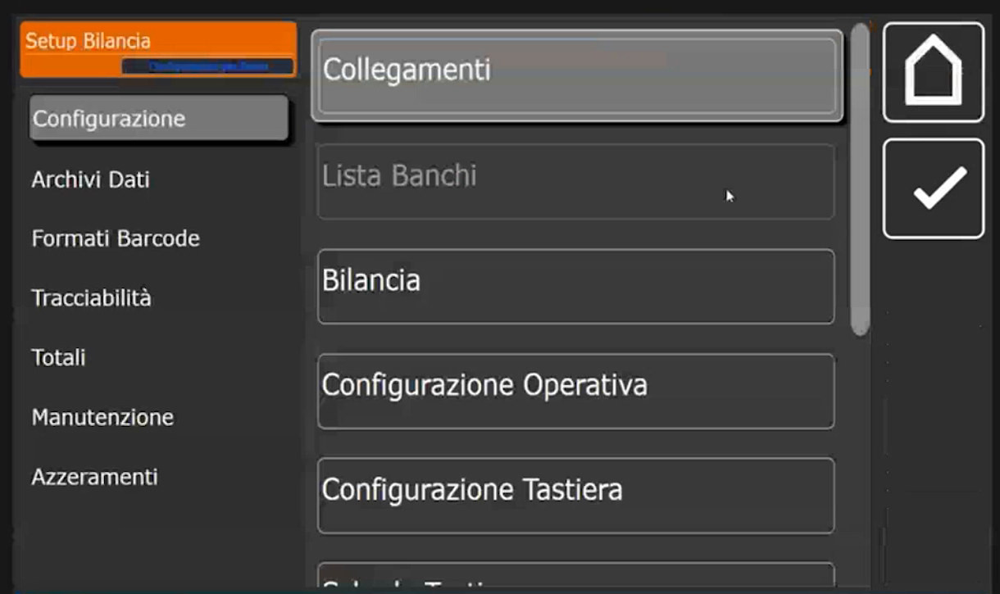
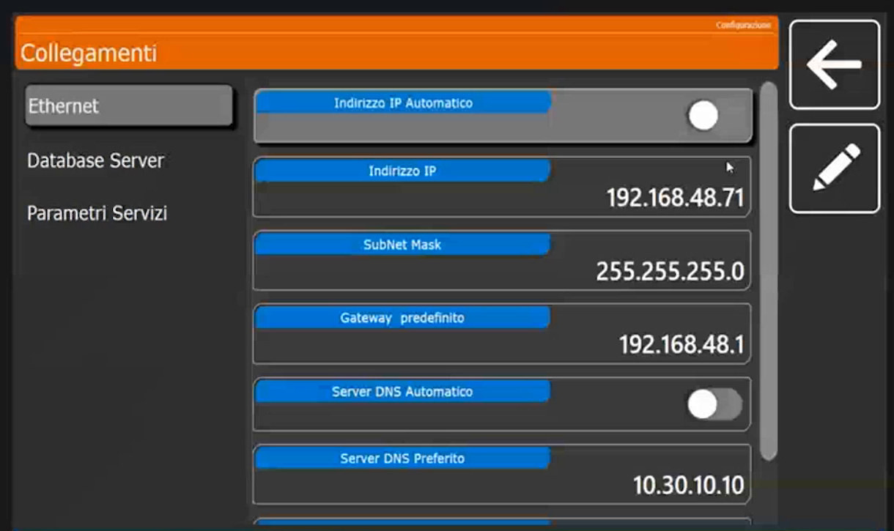
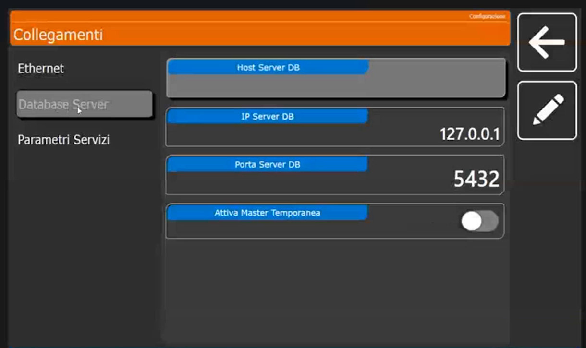
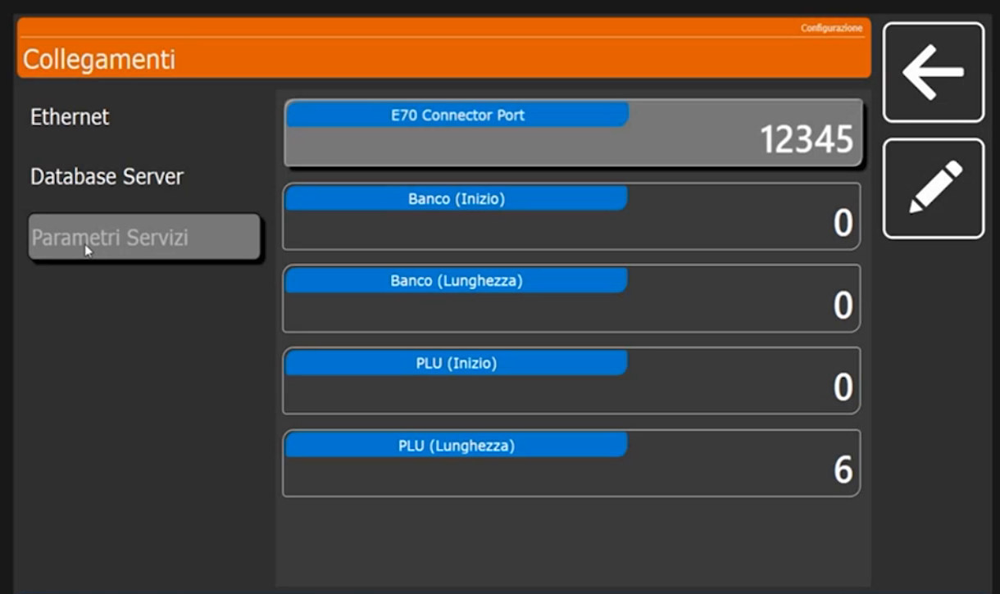

Collegamenti: rete, database e parametri di servizio
Target: tecnico installatore.
Obiettivo
Impostare l'indirizzo IP della bilancia, scegliere il database a cui lavora e conoscere i parametri di servizio usati dagli applicativi collegati.
Prerequisiti
- I banchi sono già stati creati (Lista Banchi). La lista dei banchi va compilata prima di attivare qualsiasi altra configurazione.
Come funziona la rete di bilance
Ogni bilancia ha un proprio database PostgreSQL locale. Più bilance si connettono tra loro tramite rete e indirizzo IP: la bilancia principale (server) ospita il database e le altre lo usano come punto di accesso. Il database può risiedere su una bilancia, su un'altra o su un server esterno.
Procedura
1. Apri Collegamenti
Dal menu Setup Bilancia, sezione Configurazione, tocca Collegamenti. La pagina ha tre sezioni a sinistra: Ethernet, Database Server e Parametri Servizi.

2. Ethernet: indirizzo IP
Di default la bilancia ha l'indirizzo IP automatico, quindi in DHCP. Collegando il cavo di rete si attiva la connessione a internet e quindi la possibilità di collegarsi con TeamViewer per l'assistenza remota.

I campi sono: Indirizzo IP Automatico (selettore), Indirizzo IP, SubNet Mask, Gateway predefinito, Server DNS Automatico (selettore) e Server DNS Preferito.
- Bilancia stand alone, non connessa ad altri dispositivi: puoi lasciare il DHCP. Non c'è l'obbligo di assegnare un indirizzo statico.
- Due o più bilance in rete: l'IP statico è estremamente necessario, perché le bilance si connettono e dialogano tramite l'indirizzo IP.
Valori mostrati negli esempi
Nella schermata di esempio Indirizzo IP Automatico e Server DNS Automatico sono disattivati e i valori sono IP 192.168.48.71, subnet mask 255.255.255.0, gateway 192.168.48.1, DNS preferito 10.30.10.10. Sono dati dell'impianto di prova, non valori da riutilizzare.
3. Database Server
Di default la bilancia lavora sul suo database locale. Se è una bilancia secondaria, scrivi qui l'indirizzo IP della bilancia principale.

I campi sono Host Server DB (vuoto), IP Server DB (127.0.0.1, cioè il database locale), Porta Server DB (5432) e Attiva Master Temporanea (selettore disattivato).
4. Parametri Servizi
Servono alla connettività corretta con gli applicativi collegati (per esempio BenchComm, vedi Conoscere Icona). Salvo esigenze di integrazione non vanno modificati.

I campi sono E70 Connector Port (12345), Banco (Inizio) (0), Banco (Lunghezza) (0), PLU (Inizio) (0) e PLU (Lunghezza) (6).
Verifica
Su una bilancia singola IP Server DB resta 127.0.0.1, porta 5432. Su una bilancia di rete controlla che l'indirizzo IP sia quello previsto e che, per le bilance secondarie, IP Server DB punti alla bilancia principale.
Errori comuni
| Problema | Causa probabile | Rimedio |
|---|---|---|
| Due bilance non si vedono | Una delle due è ancora in DHCP | Assegna indirizzi IP statici nella stessa rete |
| Una bilancia secondaria non vede gli articoli | IP Server DB è ancora 127.0.0.1 | Scrivi l'IP della bilancia principale |
| Un applicativo esterno non si collega | Numero banco o parametri di servizio non coerenti | Controlla il numero del banco (Lista Banchi) e E70 Connector Port |
Prossimo passo
Dichiara a quale banco appartiene la bilancia e quale banco è attivo: pagina Bilancia.